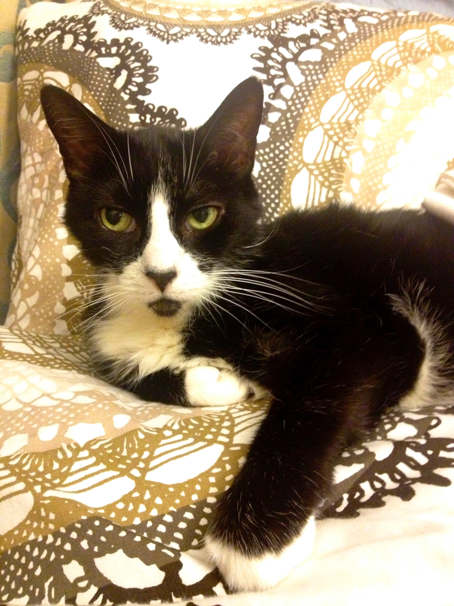

While I would never say no to a pupper, I grew up with kitties during my childhood. At one point, my family had a combined total of fifteen cats. Here lies some information about a select few.
Here is a chart describing the three cats in my immediate family.
| Name of Kitty | Year Born | Personality |
|---|---|---|
| Paulie | 2010 | Big cat complex |
| Julius | 2001 | Very chill |
| Cleo | 2000 | Scaredy cat |
Harley is this dapper guy in the tuxedo, who belonged to my aunt. He sadly passed away this winter at an impresive 19 years of age, but we had a wonderful birthday celebration complete with a tuna sandwich "cake" that even had a candle.

Paulie is my beautiful burnt orange baby, and he's about 6 years old. We think that he is part Abyssinian, but we can't be sure because he was rescued from Fort Tryon Park in New York City.